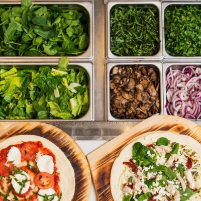

Favorite Food Places in Blacksburg
UCB Starbucks
My favorite place to get coffee in Blacksburg is at the UCB Starbucks. In my hometown, they don't have a drive through Starbucks, so that has been a nice thing to experience since coming to Blacksburg. I usually get a Venti Cappucino with an extra shot and 1 pump of SF Vanilla Syrup.
Gluten Free Pizza at Your Pie

Your Pie has some of the best gluten free pizza. It is a pizza restaurant that is kind of styled after a Chipotle, with the build it yourself line. I really love this, and it makes it a fun experience. They also have really great practices when it comes to gluten free food requests.